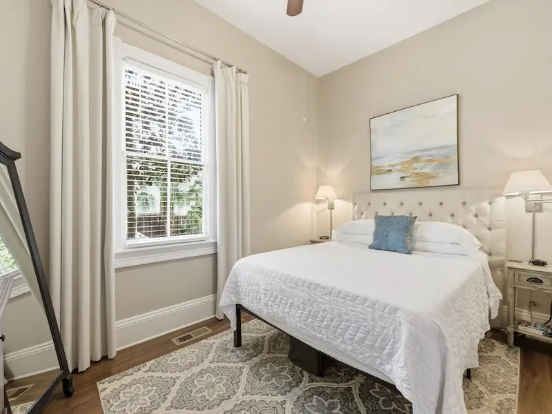

The Wilder House Story — Built in 1898, Still Standing Today
A story 125 years in the making. Still being written.
John Hinson Wilder was a retail grocer who worked just down the street. In 1898 he built this home at 314 & 316 East Park Avenue out of a father’s love for his family — a Victorian duplex by design, so his children could be side by side in one of Savannah’s finest new neighborhoods, close but with lives of their own. The building he raised has been standing on this corner for over 125 years. The heart-pine floors are original. The 11-foot ceilings are original. The bones of this place are exactly what he put here.
His son, Reverend John Stephen Wilder, was raised in this home and grew up to become one of the most beloved figures in Savannah history — known across denominations as “Savannah’s Pastor.” For 52 years at Calvary Baptist Church he served with uncommon devotion: not from the pulpit alone, but from courthouse benches — where he sat beside those on trial to advocate for the accused and stand with ordinary citizens in their hardest moments.
Meet Your Host — Savannah Native & Superhost
Travis was born at the old Telfair Hospital on Park Avenue — three blocks from where you’re staying. He went to elementary and middle school in this neighborhood. He didn’t discover Savannah’s Victorian District. He grew up in it.
His college degree is in air conditioning technology. His trade is carpentry. He builds and maintains websites from the ground up. When something needs attention in a 125-year-old building — the systems, the structure, the details guests notice — your host already knows exactly what it is and how to handle it. That combination isn’t something you hire. It’s something you spend a lifetime becoming.
His father bought The Wilder House in 1998 — exactly one hundred years after John Wilder built it — for Travis, his two brothers, and his sister. A father’s love for his family. Travis learned this building the way you learn something that matters: from the inside, with hands, over years. The history. The systems. The carpentry. What it takes to keep something genuine alive.
Three years as an Airbnb Superhost. Guest Favorite. 4.97 stars across 209 reviews. A 100% response rate. The kind of host who can fix the HVAC and leave fresh hydrangeas in the same afternoon — and who already knows every corner of the neighborhood you came here to explore.
Your Host — Host Profile
Born at the old Telfair Hospital — three blocks away — raised and schooled in this neighborhood
HVAC • Real Estate • Carpenter
Website builder & web developer — runs every aspect of this property himself
Airbnb 4.97 • 209 Reviews • 3-Year Superhost • 4.97 Stars • 209 Reviews
Father bought it in 1998 for Travis, his two brothers & sister — a father’s love, 100 years after Wilder built it for the same reason
(912) 231-7502 • info@ForsythParkVacationRental.com
100% Response Rate
Your host responds to every message. Questions about the neighborhood, the suites, what to do in Savannah — he knows all of it and is happy to share. This is his neighborhood. He grew up in it.
Designed for Your Perfect Savannah Stay
Most vacation rentals are designed for photographs. The Wilder House was built for the stay. Heart-pine floors that creak just enough to remind you you’re somewhere real. Eleven-foot ceilings that make the rooms feel generous without feeling empty. Kitchens where you actually want to make breakfast.
Suite 314A has the kitchen island guests end up around every morning — butcher block counters, full stainless appliances, a cookware set that doesn’t require improvising. Suite 316A has the haint blue island and the original 1898 fireplace. Both have seagrass rugs, room-darkening shades, a subway tile rain shower, and a dedicated wooden desk for anyone working remotely.
WiFi runs 279 Mbps in Suite 314A and 302 Mbps in Suite 316A — fast enough that a working trip to Savannah is genuinely viable. The deck catches the morning light and is exactly right for the first cup of the day.
Both suites connect to the shared backyard — a gated courtyard with a gas grill under a pergola that sees plenty of use on Savannah evenings. Self check-in via smart lock means you arrive on your own terms, front and rear entrances on both suites.
Your host has a 100% response rate and three years of Superhost. If something needs attention, it gets handled — by someone who knows this building from the inside and grew up in this neighborhood.
The Wilder House sits on East Park Avenue in Savannah’s Victorian District — one of the most architecturally significant neighborhoods in the South. Preserved 19th-century homes on every block, streets draped in Spanish moss, and Forsyth Park a short walk from the front door — the live oaks, the cast-iron fountain, and the Saturday farmers market.
“One of my favorite rentals ever. The kitchen, the floors, the location — everything was exactly right. We didn’t want to leave.”
— Verified Airbnb Guest • Suite 314AComplete Amenities in Your Wilder House Suite
Fully Stocked Kitchen
Both suites have a kitchen you’ll actually use. Stainless appliances, butcher block counters, full cookware set, coffee maker, dishwasher, ice maker. Everything in place before you arrive.
Private Parking
One dedicated off-street spot per suite, waiting when you pull in. In the Victorian District, where weekend street parking fills fast, this matters more than it sounds.
King & Queen Beds
Clean linens and room-darkening window treatments in both bedrooms. Guests mention the sleep quality in reviews. Checkout at 11am consistently feels too early.
279–302 Mbps WiFi
Fiber internet, not the kind that struggles when two people are on a call. 279 Mbps in Suite 314A, 302 Mbps in Suite 316A. Dedicated desk in both suites.
Smart Lock Entry
Your code arrives before you do. Let yourself in whenever you arrive — front and rear entrances both accessible. No coordination required.
Dedicated Workspace
A proper wooden desk, not a decorative surface. Natural light, fast WiFi, and enough quiet to get work done. The Victorian District turns out to be an unusually productive place.
Deck & Gas Grill
The shared backyard has a gas grill under a pergola and room for the whole group. The courtyard is gated. Savannah evenings out here tend to go long.
Picnic Basket
Packed and ready. Forsyth Park is a 4-minute walk — the Saturday farmers market, the live oaks, the cast-iron fountain. Worth the trip more than once.
Samsung Smart HDTVs — 3 Per Suite
A 50” in the living room, 42” in each bedroom. Stream what you want — or leave them off and go explore Savannah instead. Both are reasonable choices here.
Central A/C & Heat
Modern climate control year-round. Savannah summers are genuinely warm — you’ll be comfortable regardless of when you visit.
Clean Linens
Fresh linens and towels for every arrival. Every bedroom made up and ready the moment you walk through the door.
Security & Safety
Exterior security cameras, CO detector, smoke alarm throughout. Savannah STVR Licenses SVR-01357 (Suite 314A) & SVR-01358 (Suite 316A).
Two Bedrooms for Real Rest — Historic Comfort
The bedrooms at The Wilder House were designed with the same attention as the rest of the space — for guests who actually sleep in them. Room-darkening window treatments, beds that feel like beds. Checkout at 11am is the one thing guests consistently complain about.

King Bedroom
A king bed with a tufted headboard, fresh linens, room-darkening window treatments, and a 42” Samsung Smart HDTV. A large window faces the Victorian District. Closet space for a proper stay. The kind of room that makes a long weekend feel like it could go longer.

Queen Bedroom
Quieter than you’d expect three blocks from the park. Queen bed, a 42” Samsung Smart HDTV, a dresser with mirror, fresh linens, and closet space. Enough room to feel like a room, not an afterthought. For a second couple, a family member, or anyone who came to Savannah to actually sleep.
314-316 East Park Avenue — John Hinson Wilder's 1898 Vision
There are addresses in Savannah that carry weight, and 314–316 East Park Avenue is one of them. John Hinson Wilder understood that in 1898 when he put his family here — on the street that runs east from Forsyth Park, in a neighborhood that has been the city’s most architecturally significant for over a century. The building he raised is still on that street. The park is still at the end of it.
-
Forsyth Park — 4-Minute Walk
Thirty acres of live oaks, the iconic 1858 cast-iron fountain, a fragrance garden, tennis courts, two playgrounds, and the Saturday farmers market. Walk there before you’ve fully unpacked.
-
The Sentient Bean — 5-Minute Walk
Savannah’s most beloved neighborhood coffee shop sits at the park’s edge on Bull Street. Lavender lattes, espresso, outdoor seating. The kind of morning stop that sets the tone for a good day in Savannah.
-
Kroger Grocery — 3 Blocks North
Three blocks up Abercorn Street. Stock both kitchens on arrival and you won’t need to think about groceries again until you’re ready to leave.
-
Free DOT Shuttle — Nearby
The free purple shuttle stops on Drayton Street a few blocks away. River Street, City Market, Ellis Square — the whole Historic District without touching your car.
-
Victorian District Architecture
Preserved 19th-century homes, iron fences, gas lanterns, and Spanish moss on every block. The neighborhood that looks exactly like the photographs — because it always has.
314 East Park Ave · Savannah, GA 31401
Click to load mapGetting here: Savannah/Hilton Head Airport (SAV) is 20 minutes away. Tybee Island Beach is 25 minutes. Historic River Street is walkable or a free DOT shuttle ride from the neighborhood.
🚗 Driving / Car Rental
11 miles · ~18 min from SAV. Enterprise, Hertz, Avis & Budget all on-site at the terminal. Private parking included at The Wilder House — no hunting for a spot.
📱 Uber / Lyft
$15–$25 · 18–25 min. Both apps work well at SAV. Small airport pickup fee applies. Surge pricing possible on busy weekends and holidays.
🚕 Taxi
~$28 · ~25 min. Yellow Cab Savannah and others wait at the taxi rank outside baggage claim. No app required — just walk out and go.
🚌 Public Bus (CAT)
~$6.50 · ~45 min. CAT 100X Airport Express to downtown ($5), then connect to Forsyth Park ($1.50). Runs Mon–Sat until 6:30pm.
4.97-Star Rated — 209 Verified Guest Reviews
“One of my favorite rentals ever. The kitchen, the floors, the location — everything was exactly right. We didn’t want to leave.”
— Verified Guest • The Wilder House“Loved the home — it was the most comfortable. The hydrangeas and the note were a nice touch and very welcoming.”
— Jacob • Verified Guest • Suite 314A“Beautiful home with everything we needed. Great location — very walkable! We will definitely be staying here for our next trip to Savannah.”
— Nick • Verified Guest • Suite 316A“Awesome place! Everything we needed and wanted — and such great taste! We definitely recommend it.”
— The Dickersons & The Shisslers • Verified GuestsAbout The Wilder House FAQ
Who built The Wilder House and when?
John Hinson Wilder — a retail grocer who worked just down the street — built this home at 314–316 East Park Avenue in 1898. He designed it as a Victorian duplex so his children could live side by side on one of Savannah’s finest new streets, close but with lives of their own. The heart-pine floors he put in are still there. So are the 11-foot ceilings. So is the building.
Who is the host?
A Savannah native who went to school in this neighborhood, a carpenter, and HVAC technician who has maintained this building from the inside out. His father bought The Wilder House in 1998 — exactly one hundred years after John Wilder built it — for Travis, his two brothers, and his sister. The same love, the same address, a century apart. Three years as an Airbnb Superhost. Guest Favorite on both suites. 4.97 stars across 209 verified reviews. 100% response rate.
What makes The Wilder House different from other Savannah vacation rentals?
Most Savannah rentals are renovated to look historic. The Wilder House is historic. The floors, the ceilings, the millwork — original 1898, maintained by a carpenter who knows the difference between preservation and decoration. Add private parking, two fully stocked kitchens, and a Victorian District address a short walk from Forsyth Park, and there isn’t a comparable rental in the city.
How do I contact the host?
Call or text (912) 231-7502, or email info@ForsythParkVacationRental.com. Questions about the suites, the neighborhood, what to do in Savannah — your host responds to every message and knows all of it. 100% response rate.
Are the suites in a genuine historic building?
Yes — a real one. The Wilder House is an 1898 Victorian quadruplex at 314–316 East Park Avenue in Savannah’s Victorian District. Not a building styled to look old. The original structure, with original floors and original ceilings, permitted and inspected under Savannah STVR licenses SVR-01357 (Suite 314A) and SVR-01358 (Suite 316A).
Can we book both suites together?
Yes. Suite 314A and Suite 316A together give your group four bedrooms, two bathrooms, two complete kitchens, and two dedicated parking spots — side by side in the same 1898 building, sleeping up to eight. See the full group booking page.
What are the Savannah STVR license numbers?
Suite 314A holds license SVR-01357. Suite 316A holds license SVR-01358. Both issued by the City of Savannah — fully permitted, inspected, and compliant with all municipal short-term rental regulations.
Is The Wilder House close to Forsyth Park?
A 4-minute walk. East Park Avenue runs directly toward the park, and 314–316 sits just a few blocks east of the live oaks. The cast-iron fountain, the fragrance garden, the Saturday farmers market — all of it within easy walking distance. John Wilder chose this street in 1898 because of exactly that. It is still a good address for the same reason.
“John Wilder built this home in 1898 for his family. It has been sheltering guests ever since. The floors creak in exactly the right places. Some buildings have that in them.”
Book Your Stay at The Wilder House
One suite or both — private parking waiting, kitchens stocked, beds made. Spring weekends and St. Patrick’s Day fill fast. Check your dates now.
From $195/night • STVR Licenses SVR-01357 & SVR-01358 • Guest Favorite • 4.97 Stars